2006 After Burn Report
Welcome
While BRC Census has been producing reports since 2002, it is hard to compare recent data with reports from earlier years (before 2013) because of important differences in methodology, from a convenience sample of self-selected Census takers on-playa to a weighted online survey conducted after the Man burns.
About You
Age
What was your age at your last birthday?

Gender
What is your current gender?
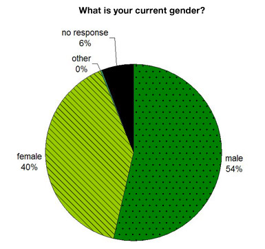
Sexual Orientation
Would you describe yourself as bisexual?
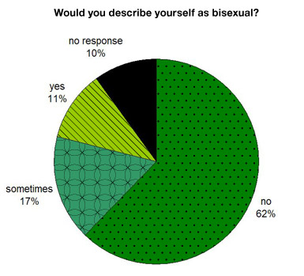
Would you describe yourself as gay?
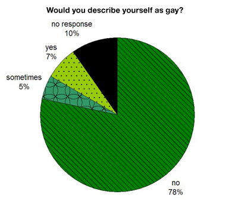
Would you describe yourself as straight?

Race and Ethnicity
Do you consider yourself to be a person of color?
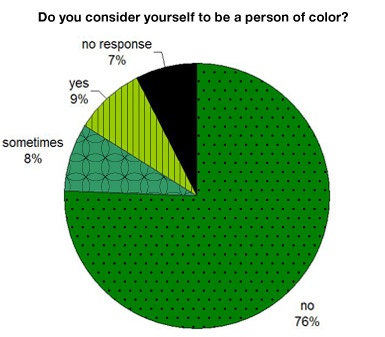
Spirituality
Are you religious and/or spiritually inclined?
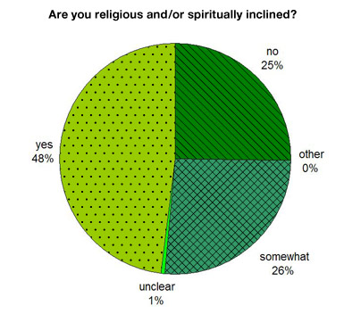
Are you engaged in a solitary spiritual journey of your own design?
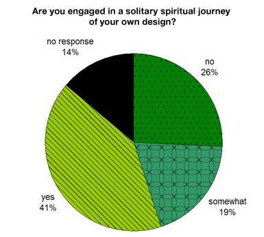
Children
How many of your children are here?
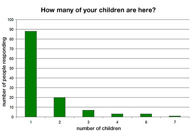
Relationships
Are you currently involved in an intimate relationship?
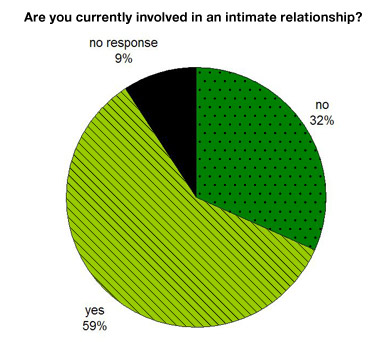
Have you ever embarked on a significant romantic relationship with someone you met on the playa?
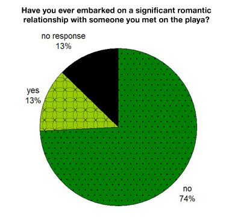
At Burning Man
Spiritual Experience
Is being here at Burning Man a spiritual experience for you?
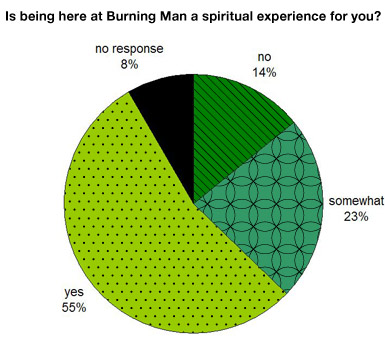
Camping
How many people are you camping with?
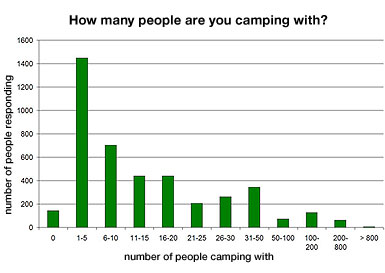
Is your camp a themecamp?
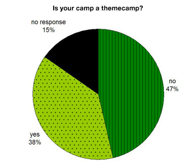
Departure
When is your estimated date of departure from Black Rock City?
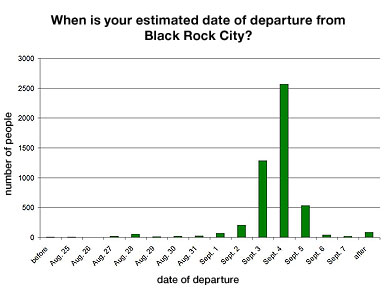
Favorite Year
Which was your favorite year?
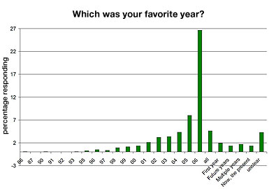
Money and Gifts
I am glad that money is not accepted at Burning Man
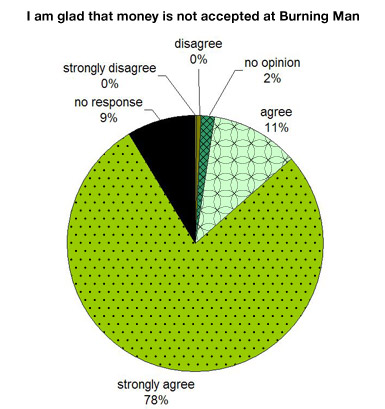
I like giving gifts at Burning Man

I like receiving gifts at Burning Man

The Desert
Are you attracted to Burning Man because of the natural beauty of the Black Rock Desert?
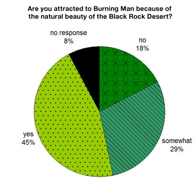
Art
Are you here to make or display art?

Are you helping others who are making or displaying art here?

Did you help with a group art project in previous years?
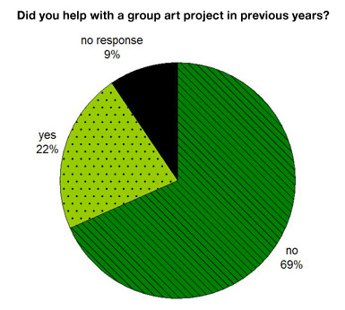
Did you help with a group art project in previous years?
Work
Are you at Burning Man because of a work opportunity?

Home
Is Black Rock City like a home to you?
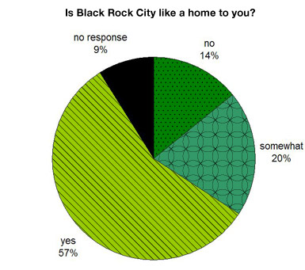
Life Satisfaction
How satisfied are you with your life in Black Rock City?

How satisfied are you with your life in the default world?
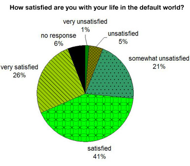
Money and Travel
Income
What was your annual income in 2005 before taxes?
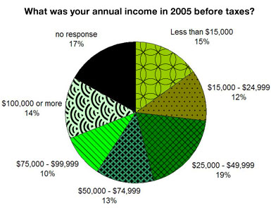
Spending
In the end, how much will you spend on this year’s event?
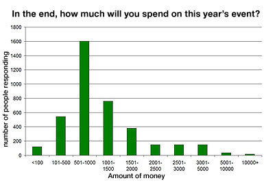
Travel
Did you travel in a rented vehicle or trailer on your way to Burning Man?